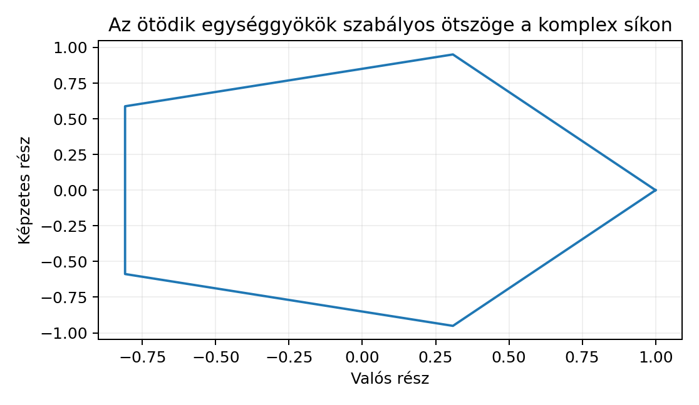

6.3 Hatványozás és gyökvonás:
Moivre-formula és egységgyökök
6.3.1 Motiváció
Eddig a komplex számok összeadását, szorzását és inverzét ismerjük,
és láttuk, hogy a szorzás a komplex számsíkon nyújtva forgatásként
értelmezhető. Egy természetes kérdés: hogyan lehet egy komplex számot
önmagával sokszor megszorozni, és ebből hogyan lehet
visszafelé dolgozni, azaz gyököt vonni? A valós számoknál a
hatvány egyszerű, de a
értéke egyértelmű. A komplex számoknál azonban az
egyenletnek már öt különböző megoldása van a komplex síkon. Ez a
többértékűség okozza a legtöbb félreértést, de egyben ez teszi igen
hasznossá is a komplex számokat: például a háromfázisú váltakozó áram
fázisai vagy a jelfeldolgozásban használt diszkrét
Fourier-transzformáció alappillérei éppen az úgynevezett
egységgyökök.
Ebben az alfejezetben bebizonyítjuk a Moivre-formulát, megtanuljuk,
hogyan számíthatjuk ki egy komplex szám összes
-edik
gyökét, megismerjük az egységgyököket, és alkalmazzuk mindezt
trigonometrikus azonosságok levezetésére, valamint háromfázisú áram és
diszkrét Fourier-transzformáció ízelítőjére.
6.3.2 Szemléletes kép
A komplex szám trigonometrikus alakja
azt mondja, hogy a
-nek
megfelelő vektor hossza
,
és a valós tengellyel bezárt szöge
.
Ha
-t
-edik
hatványra emeljük, a hossz
lesz, a szög pedig
,
tehát a hatványozás a sugár hatványozásából és a szög többszörözéséből
áll. A gyökvonás ennek a megfordítása: olyan vektorokat keresünk,
amelyek hossza
,
és amelyek szöge
-hez
képest
egész számú többszöröseivel tolódik el. Emiatt az
-edik
gyökök a komplex síkon egy szabályos
-szög
csúcsait adják.
Nézzük meg konkrétan
esetén az
ötödik gyökeit. Az
trigonometrikus alakja
.
Az öt gyök a sugáron
hosszúságú, szögük pedig
Ezek a pontok az egységkörön egy szabályos ötszöget alkotnak.

Az ötödik egységgyökök szabályos ötszöge
a komplex síkon - A pontok a cos(2kπ/5) és sin(2kπ/5) értékekből
számolva, 5 tizedesre kerekítve; az utolsó pont ismét az első a zárt
sokszög kirajzolásához.
Az ábrán jól látszik, hogy mind az öt gyök az egységkörön helyezkedik
el, és egyenletesen oszlanak el.
6.3.3 A Moivre-formula
A teljes indukcióval könnyen bizonyítható állítás a komplex számok
hatványozásának és a trigonometrikus alaknak a kapcsolatát írja le.
Tétel (Moivre-formula). Ha
egy nem nulla komplex szám trigonometrikus alakja, akkor bármely
esetén
Bizonyítás. A
felírást használjuk.
Bizonyítási terv: Először megmutatjuk, hogy az állítás igaz
-re.
Ezután feltesszük, hogy
-ra
igaz, és bebizonyítjuk
-re.
A bizonyítás kulcsa, hogy a szorzásnál a szögek összeadódnak, a hosszok
összeszorzódnak. Ehhez a trigonometrikus addíciós képleteket
használjuk.
1. lépés (alapeset). Ha
,
akkor
,
tehát az állítás triviálisan igaz (itt az indukció miatt expliciten
ellenőrizzük).
2. lépés (indukciós feltevés). Tegyük fel, hogy
valamely
esetén
3. lépés (indukciós lépés). Számítsuk ki
-et:
Az indukciós feltevést és a
trigonometrikus alakját behelyettesítve:
A szorzás asszociativitása és
kommutativitása miatt a hosszok szorzódnak:
Most használjuk a komplex szorzás
definícióját:
.
Itt
,
,
,
.
Ekkor
A trigonometrikus addíciós képletek
szerint
és
Így
Ez éppen a Moivre-formula
-re.
4. lépés (konklúzió). A teljes indukció elve alapján
a Moivre-formula minden
-re
igaz. ∎
A bizonyításból az is látszik, hogy a Moivre-formula a komplex
szorzás geometriai jelentésének (hossz szorzódik, szög összeadódik)
algebrai megfogalmazása.
Megjegyzés (a Moivre-formula negatív kitevőre is
kiterjeszthető). Ha
pozitív egész, akkor a
hatványt úgy értelmezzük, mint
,
amennyiben
.
A A komplex számsík: abszolút érték, argumentum,
trigonometrikus alak alfejezetben láttuk, hogy
trigonometrikus alakja
.
Ebből a Moivre-formula
-re
való alkalmazásával kapjuk:
Így a Moivre-formula minden egész
kitevőre érvényes.
6.3.4 Az exponenciális jelölés,
mint rövidítés
A trigonometrikus alak gyakran nehézkes. Ezért előzetes rövidítésként
bevezetjük az
jelölést. Ez még nem
az exponenciális függvény komplex értelmezése – azt csak a Az exponenciális függvény hatványsora és az
Euler-formula alfejezetben alapozzuk meg. Most csupán jelölés:
egy olyan komplex számot jelöl, amelynek abszolút értéke
és argumentuma
.
Ezzel a jelöléssel a trigonometrikus alak igen tömör:
A Moivre-formula ebben a jelölésben:
Ez a forma sokkal könnyebben kezelhető,
és jól mutatja, hogy a hatványozás a hossz hatványozását és a szög
többszörözését jelenti. A későbbi alfejezetekben ezt a jelölést
használjuk, de mindig emlékezzünk rá, hogy itt csak szimbólum, amelynek
jogosságát a hatványsorok adják.
6.3.5 Az
-edik
gyökvonás
Definíció
(-edik
gyök). Legyen
komplex szám. Egy
komplex számot
egy
-edik
gyökének nevezünk, ha
.
A
összes
-edik
gyökének halmaza:
Tétel (az
-edik
gyökök létezése és száma). Bármely
komplex számnak pontosan
darab különböző
-edik
gyöke van, és ezek a fenti képlettel adódnak. A
esetén csak a
az
-edik
gyök, és ez
-szeres
multiplicitású (de halmazként egyetlen elem).
Bizonyítás (részleges). A gyökök képletét
megkaphatjuk a Moivre-formula segítségével. Ha
és
,
akkor a Moivre-formula szerint
Mivel két trigonometrikus alakban adott
nem nulla komplex szám pontosan akkor egyenlő, ha hosszuk egyenlő és
szögük
egész számú többszörösével tér el, kapjuk:
A
valós, nemnegatív, így
(a valós
-edik
gyök). A szögre:
A
egész értékei közül elég a
értékeket venni, mert
és
ugyanazt a szöget adja
-vel
eltérve, tehát ugyanazt a komplex számot adja. Ha
,
akkor a szögek különbsége
,
tehát a szögek nem térnek el
többszörösével, így
.
Így pontosan
különböző gyököt kapunk. A keresett gyökök tehát
Ezek mindegyikére a Moivre-formula
szerint
.
∎
Példa. Számítsuk ki az
köbgyökeit, azaz oldjuk meg a
egyenletet.
Először írjuk fel a
-at
trigonometrikus alakban. A
hossza
,
argumentuma
(mert a negatív valós tengelyen van):
A köbgyökök képlete szerint
,
,
.
A hossz gyöke
.
A szögek:
Tehát: -
:
,
így
.
-
:
,
így
.
-
:
,
így
.
Ellenőrzés. Emeljük köbre a
számot:
Hasonlóan a másik kettő is
-at
ad. Megjegyezzük, hogy a valós egyenletmegoldás csak a
-t
adná, de a komplex síkon három gyök van.
Az alábbi ábra a gyökképlet geometriáját mutatja: a gyökök a
sugarú körön ülnek, az első a
szögnél, a többi
lépésközzel, így szabályos
-szöget
alkotnak. A jobb oldali panel a következő példa, az
negyedik gyökeit mutatja előre.
Statikus változat (mint a PDF-ben)
A
köbgyökei és az
negyedik gyökei; számított értékek
Példa. Oldjuk meg az
egyenletet.
Először írjuk fel az
számot trigonometrikus alakban. Az abszolút értéke
,
argumentuma
(mert
és a szám az első síknegyedben van). Így
A negyedik gyökök hossza
.
(Ezt hagyhatjuk így, vagy közelítjük:
.)
A szögek:
Tehát a négy gyök:
Ezek közül
esetén
.
A pontos értékek nem szükségesek, de a szerkezet jól látszik: a gyökök
egy négyzet csúcsai a
sugarú körön.
6.3.6 Egységgyökök
Az
szám
-edik
gyökeit egységgyököknek nevezzük. Mivel
,
a képlet szerint az
-edik
egységgyökök:
Az exponenciális jelöléssel
.
Az
egységgyök primitív
-edik
egységgyök, ha
,
de
minden
-re;
az
pontosan akkor primitív, ha
és
relatív prímek. Primitív például a
esethez tartozó gyök, amelyet
-nel
jelölünk:
Minden
-edik
egységgyök felírható
hatványaként:
.
Tétel (az egységgyökök összege). Ha
,
akkor az
-edik
egységgyökök összege nulla:
Bizonyítás. Az egységgyökök éppen a
egyenlet gyökei. A
polinom szorzattá alakítását ismerjük:
Ha
bármelyik
-edik
egységgyök, akkor
.
A
az egyetlen olyan gyök, amelyre
.
A többi gyökre
,
tehát a második tényezőnek kell nullának lennie:
Így a
-re
mint ismeretlenre felírt egyenlet gyökei éppen az
-től
különböző egységgyökök. De a polinomok gyöktényezős felbontása alapján
Hasonlítsuk össze a
együtthatóját a két oldalon. A bal oldalon ez
,
a jobb oldali szorzat kifejtésében pedig
(Viète-formula). Tehát
és az
hozzáadásával
(Alternatív, mértani összeges
levezetés:
,
mert
és
.)
Egy másik, geometriai bizonyítás: az egységgyökök mint vektorok egy
szabályos
-szög
csúcsait adják, és a szabályos sokszög középpontjából a csúcsokba mutató
vektorok összege nulla (szimmetria miatt). ∎
Ezt az eredményt használjuk a Fourier-soroknál is: a diszkrét
Fourier-transzformációban az egységgyökök ortogonalitási relációit
alkalmazzuk.
6.3.7 Trigonometrikus azonosságok a
Moivre-formulából
A Moivre-formula segítségével gyorsan levezethetünk trigonometrikus
azonosságokat, például a
és
képletét.
Példa (cos 3x és sin 3x). Induljunk ki a
Moivre-formulából
-mal:
A bal oldalt a binomiális tétellel
kifejtjük. Legyen
,
.
Ekkor
Behelyettesítve:
Mivel
és
,
ez
Csoportosítsuk a valós és képzetes
részt:
A Moivre-formula jobb oldala
.
Két komplex szám akkor egyenlő, ha valós és képzetes részük külön-külön
egyenlő, így:
A
képletét tovább alakíthatjuk a
azonosság felhasználásával:
Hasonlóan a
behelyettesítéssel:
Ezek a jól ismert háromszoros szög
képletei.
Példa
(
linearizálása). A Moivre-formula segítségével a
hatványt kifejezhetjük
függvények lineáris kombinációjaként. Mivel
(az exponenciális jelölésünket használva), ezért
A binomiális tétel szerint
Most párosítsuk a
és
tagokat. Ha
páratlan, a tagok párokba rendezhetők, és minden pár
alakot ad, így
ahol az
a legnagyobb egész, ami nem nagyobb
-nél.
Ha
páros, a középső tag
()
konstans, a többi pár koszinuszot ad:
Ezt az eljárást
linearizálásnak nevezzük, mert a hatványt trigonometrikus
függvények első hatványainak összegére cseréli. Ez hasznos például
integrálok kiszámításánál.
Példa:
linearizálása. Az
esetben
Ez a jól ismert azonosság.
6.3.8 Valós életbeli alkalmazás:
háromfázisú áram és a diszkrét Fourier-transzformáció
Háromfázisú váltakozó áram. Az elektromos
hálózatokban a háromfázisú rendszer három, egymáshoz képest
-kal
(
radiánnal) eltolt szinuszos feszültséget használ. A fázisok feszültségei
(pillanatnyi értékben):
A komplex számok nyelvén ezek a fázisok
éppen a harmadik egységgyökök. Ha a fázisfeszültségeket komplex forgó
vektorokként (fázorokként) ábrázoljuk, akkor a három fázor a komplex
síkon a harmadik egységgyökök irányaiba mutat:
,
,
.
A gyökök összege nulla, ami azt jelenti, hogy szimmetrikus terhelés
esetén a három fázis áramának (vagy feszültségének) vektori összege
nulla: a nullvezetőn nem folyik áram. Ez a gyakorlatban azt eredményezi,
hogy a háromfázisú rendszerben energiaátvitelnél kevesebb vezeték is
elegendő.
Diszkrét Fourier-transzformáció (DFT) ízelítő. A
jelfeldolgozásban egy
hosszúságú diszkrét jel spektrumát úgy kapjuk, hogy a jel mintáit
megszorozzuk az
-edik
egységgyökök hatványaival. Legyen
a fenti primitív egységgyök; a DFT a konjugált hatványait használja (ez
az előjelkonvenció). Az
minták DFT-je:
Az egységgyökök ortogonalitási
tulajdonsága – amelynek alapja az összegükre vonatkozó tétel –
biztosítja, hogy ez a transzformáció invertálható, és a jel felbontható
frekvenciakomponensekre. Például ha
egyetlen koszinuszos jel mintáit tartalmazza, akkor a DFT spektrumában
csak a megfelelő frekvenciánál lesz csúcs. Ezt a témát a Fourier-együtthatók és a komplex alak alfejezetben
mélyítjük el.
6.3.9 Számolási recept: komplex
szám
-edik
gyökei
Írd fel a
számot trigonometrikus alakban:
,
ügyelve az argumentum főértékére (vagy bármely
többszörösével eltolt értékére).
Számold ki a hossz valós
-edik
gyökét:
.
Képezd a szögeket:
,
ahol
.
A gyökök:
.
(Ellenőrzés) Válassz egy gyököt, emeld
-edik
hatványra a Moivre-formulával, és ellenőrizd, hogy visszakapod
-t.
Ha
,
akkor az egyetlen gyök a
.
6.3.10 Tipikus hibák
Csak egy gyök megadása. Sokan a valós számoknál
megszokott egyértelmű gyökvonást viszik át a komplex számokra, pedig a
egyenletnek
különböző komplex megoldása van (ha
).
Például a
értéke nem csak
,
hanem
.
Az argumentum rossz meghatározása. A
argumentum nem egyértelmű; bármely
többszörösével eltérő érték ugyanazt a komplex számot adja
trigonometrikus alakban. Ha a gyökképletben más
-t
használunk, a gyökök halmaza ugyanaz lesz, de a
indexek eltolódnak. Például a
köbgyökeinél
és
ugyanazokhoz a gyökökhöz vezet, csak más sorrendben.
A hossz gyökének hibás számolása. A
mindig nemnegatív valós szám, ahol
.
Nem szabad elfelejteni, hogy a gyök hossza
,
nem pedig a gyök alatt a teljes komplex szám.
Az exponenciális jelölés félreértése. Az
nem valós kitevős exponenciális függvény, hanem egyelőre csak jelölés a
számra. A tulajdonságai hasonlóak, de a pontos definíció később
jön.
6.3.11 Önellenőrzés
Írd fel a Moivre-formulát
esetén
-ra.
Hány különböző negyedik gyöke van a
számnak? Add meg az egyik gyök trigonometrikus alakját.
Mennyi az
-ödik
egységgyökök összege?
Fejezd ki a
értékét
és
segítségével a Moivre-formula alapján.
Igaz-e, hogy minden komplex számnak pontosan két négyzetgyöke van?
Mi a helyzet a
-val?
A válaszokat a Megoldások szakasz elején, az „Önellenőrzés –
válaszok” alcím alatt találod.
6.3.12 Feladatok
1. feladat (A). Számítsd ki az
szám köbgyökeit trigonometrikus alakban, és írd fel őket algebrai
alakban is.
2. feladat (A). Oldd meg a
egyenletet, és ábrázold a gyököket a komplex síkon.
3. feladat (B). Bizonyítsd be a Moivre-formula
segítségével, hogy
.
4. feladat (B). Számítsd ki a
szám ötödik gyökeinek összegét és szorzatát.
5. feladat (C). Bizonyítsd be, hogy ha
egy
-edik
primitív egységgyök, akkor az
számok mind az
különböző
-edik
gyökei, és az
-et
is beleértve az összes
-edik
egységgyököt megkapjuk.
6. feladat (D). Egy háromfázisú rendszerben a három
fázis feszültség-fázorai a komplex síkon:
,
,
volt. Számítsd ki a három fázor összegét, és értelmezd az eredményt a
nullvezető áramának szempontjából. (A valós elektrotechnikában a fázorok
a maximális feszültséghez kötődnek, itt most a példa kedvéért használjuk
ezt az egyszerű reprezentációt.)
6.3.13 Megoldások
6.3.13.1 Önellenőrzés –
válaszok
.
Négy különböző negyedik gyök van. Az egyik gyök például:
.
Az
-ödik
egységgyökök összege
.
A Moivre-formula
-vel:
.
Kifejtve:
,
tehát
.
Az
behelyettesítéssel:
.
Hamis ebben a formában: minden nem nulla komplex
számnak pontosan két (egymás ellentettjét képező) négyzetgyöke van; a
-nak
csak egy, a
,
mert
.
6.3.13.2 1. feladat megoldása
Az
szám trigonometrikus alakja:
,
argumentuma
.
Tehát
.
A köbgyökök
():
A hossz
.
Számoljuk ki a szögeket: -
:
,
így
.
-
:
,
így
.
-
:
,
így
.
Ellenőrzés:
,
ami visszaadja a kiinduló számot.
6.3.13.3 2. feladat megoldása
Az
trigonometrikus alakja
.
Az ötödik gyökök:
Konkrétan: -
:
.
-
:
.
-
:
.
-
:
.
-
:
.
Ezek a pontok az egységkörön egy szabályos ötszöget alkotnak, ahogy a
fenti ábrán láttuk.
6.3.13.4 3. feladat megoldása
A Moivre-formula
-gyel:
A bal oldalt a binomiális tétellel
kifejtjük:
Mivel
,
,
,
ez
A valós rész:
Használjuk a
azonosságot. Ekkor
és
.
Behelyettesítve:
Kifejtve:
Ez a kívánt azonosság.
6.3.13.5 4. feladat megoldása
Először számítsuk ki a
trigonometrikus alakját. Az abszolút érték:
.
Az argumentum: a szám a második síknegyedben van, és
,
tehát
.
Így
Az ötödik gyökök:
A gyökök összege: mivel a
gyökök kielégítik a
egyenletet, ezért a Viète-formula szerint a gyökök összege nulla (mert a
polinomban nincs
-es
tag). Tehát az összeg
.
A gyökök szorzata: a
polinom gyöktényezős alakja:
A konstans tag a polinomban
,
a gyöktényezős alakban pedig
.
Tehát
6.3.13.6 5. feladat megoldása
Legyen
.
Azt kell belátni, hogy az
mind különbözőek és mind gyökei az
egyenletnek. A Moivre-formula szerint
Ez nyilvánvalóan
-edik
egységgyök, mert
.
(Pontosabban
.)
Továbbá ha
,
akkor
,
mert a szögek különböznek:
és
-vel
nem térhetnek el, mert
.
Tehát a felsorolt
darab szám mind különböző, és mind az
-edik
egységgyök. Mivel az
polinomnak legfeljebb
gyöke van, ezek éppen az összes gyökök.
6.3.13.7 6. feladat megoldása
A három fázis feszültség-fázorainak összege:
Az egységgyökök összegére vonatkozó
tétel szerint
.
Ezért
Tehát a három fázor összege nulla. Ez
azt jelenti, hogy szimmetrikus (azonos amplitúdójú, egymástól
-kal
eltolt) terhelés esetén a három fázis áramainak vektori összege nulla,
így a csillagpontban a nullvezetőn nem folyik áram. A gyakorlatban ezért
lehet a nullvezetőt kisebb keresztmetszettel méretezni, vagy bizonyos
esetekben elhagyni.
6.3.14 Rövid összefoglaló
A Moivre-formula szerint ha
,
akkor
minden
-re.
Ez a formula a komplex szorzás geometriai jelentésének (hossz szorzódik,
szög összeadódik) algebrai alakja. Az exponenciális jelölés
egyelőre rövidítés, amelyet később pontosítunk.
Egy nem nulla komplex számnak pontosan
darab
-edik
gyöke van:
Az
-edik
gyökeit
-edik
egységgyököknek nevezzük; ezek a komplex síkon szabályos
-szöget
alkotnak, és összegük nulla
(
esetén).
A Moivre-formula segítségével trigonometrikus azonosságokat
vezethetünk le (pl.
),
és hatványokat linearizálhatunk. Az egységgyökök alapvető szerepet
játszanak a háromfázisú áram és a diszkrét Fourier-transzformáció
elméletében is.
Ez az alfejezet a klasszikus komplex számelmélet standard eredményeit
tárgyalja, amelyek megtalálhatók a szokásos kalkulus- és
analízistankönyvekben (például Stewart, Spivak, Apostol). A háromfázisú
áram leírása általános villamosmérnöki ismeret; a pontos
feszültségértékek és mérési adatok itt csak szemléltetésre szolgálnak. A
diszkrét Fourier-transzformáció képlete szintén szabványos, de a
jelfeldolgozási részleteket a későbbi alfejezetekben fejtjük ki. A
Python-API-kkal kapcsolatban itt nem tettünk állítást. Történeti
adatokat nem közöltünk.